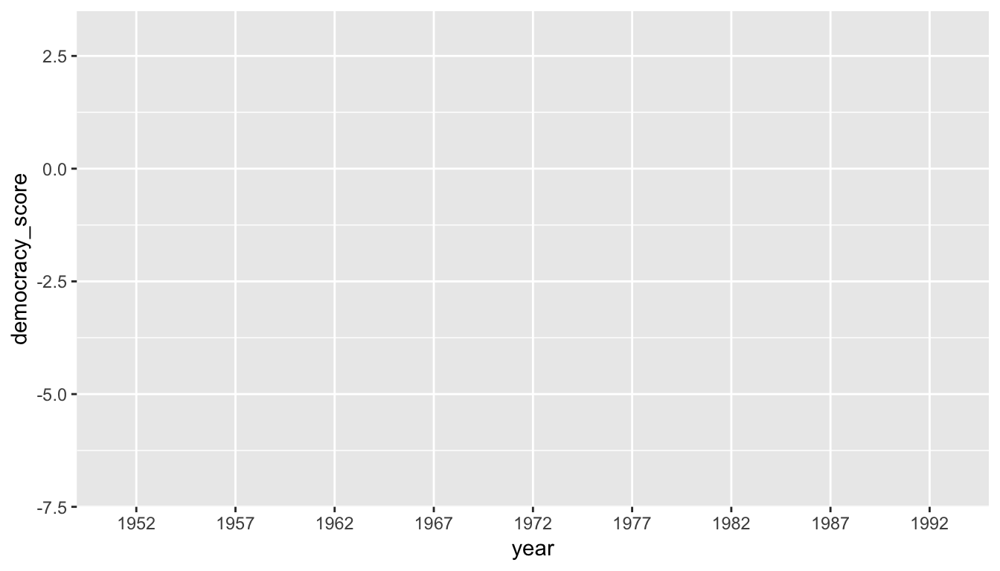

4 Tidy Data via tidyr
In Subsection 2.2.1 we introduced the concept of a data frame: a rectangular spreadsheet-like representation of data in R where the rows correspond to observations and the columns correspond to variables describing each observation. In Section 2.4, we started explorations of our first data frame flights included in the nycflights13 package. In Chapter 3 we made graphics using data contained in flights and other data frames.
In this chapter, we extend some of these ideas by discussing a type of data formatting called “tidy” data. You will see that having data stored in “tidy” format is about more than what the colloquial definition of the term “tidy” might suggest of having your data “neatly organized” in a spreadsheet. Instead, we define the term “tidy” in a more rigorous fashion, outlining a set of rules by which data can be stored and the implications of these rules on analyses.
Although knowledge of this type of data formatting was not necessary in our treatment of data visualization in Chapter 3 since all the data was already in tidy format, we’ll see going forward that having tidy data will allow you to more easily create data visualizations in a wide range of settings. Furthermore, it will also help you with data wrangling in Chapter 5 and in all subsequent chapters in this book when we cover regression and discuss statistical inference.
Needed packages
Let’s load all the packages needed for this chapter (this assumes you’ve already installed them). If needed, read Section 2.3 for information on how to install and load R packages.
library(dplyr)
library(ggplot2)
library(nycflights13)
library(tidyr)
library(readr)DataCamp
Our approach to introducing the concept of “tidy” data is aligned with the approach taken in Alison Hill’s DataCamp course “Working with Data in the Tidyverse,” a course where students learn to work with data using tools from the tidyverse in R. If you’re interested in complementing your learning below in an interactive online environment, click on the image below to access the course. The relevant chapter is Chapter 3 “Tidy your data.”

4.1 What is tidy data?
You have surely heard the word “tidy” in your life:
- “Tidy up your room!”
- “Please write your homework in a tidy way so that it is easier to grade and to provide feedback.”
- Marie Kondo’s best-selling book The Life-Changing Magic of Tidying Up: The Japanese Art of Decluttering and Organizing
- “I am not by any stretch of the imagination a tidy person, and the piles of unread books on the coffee table and by my bed have a plaintive, pleading quality to me - ‘Read me, please!’” - Linda Grant
What does it mean for your data to be “tidy”? Beyond just being organized, in the context of this book having “tidy” data means that your data follows a standardized format. This makes it easier for you and others to visualize your data, to wrangle/transform your data, and to model your data. We will follow Hadley Wickham’s definition of tidy data here (Wickham 2014):
A dataset is a collection of values, usually either numbers (if quantitative) or strings AKA text data (if qualitative). Values are organised in two ways. Every value belongs to a variable and an observation. A variable contains all values that measure the same underlying attribute (like height, temperature, duration) across units. An observation contains all values measured on the same unit (like a person, or a day, or a city) across attributes.
Tidy data is a standard way of mapping the meaning of a dataset to its structure. A dataset is messy or tidy depending on how rows, columns and tables are matched up with observations, variables and types. In tidy data:
- Each variable forms a column.
- Each observation forms a row.
- Each type of observational unit forms a table.

Figure 4.1: Tidy data graphic from http://r4ds.had.co.nz/tidy-data.html
For example, say the following table consists of stock prices:
| Date | Boeing Stock Price | Amazon Stock Price | Google Stock Price |
|---|---|---|---|
| 2009-01-01 | $173.55 | $174.90 | $174.34 |
| 2009-01-02 | $172.61 | $171.42 | $170.04 |
Although the data are neatly organized in a spreadsheet-type format, they are not in tidy format since there are three variables corresponding to three unique pieces of information (Date, Stock Name, and Stock Price), but there are not three columns. In tidy data format each variable should be its own column, as shown below. Notice that both tables present the same information, but in different formats.
| Date | Stock Name | Stock Price |
|---|---|---|
| 2009-01-01 | Boeing | $173.55 |
| 2009-01-02 | Boeing | $172.61 |
| 2009-01-01 | Amazon | $174.90 |
| 2009-01-02 | Amazon | $171.42 |
| 2009-01-01 | $174.34 | |
| 2009-01-02 | $170.04 |
However, consider the following table
| Date | Boeing Price | Weather |
|---|---|---|
| 2009-01-01 | $173.55 | Sunny |
| 2009-01-02 | $172.61 | Overcast |
In this case, even though the variable “Boeing Price” occurs again, the data is tidy since there are three variables corresponding to three unique pieces of information (Date, Boeing stock price, and the weather that particular day).
The non-tidy data format in the original table is also known as “wide” format whereas the tidy data format in the second table is also known as “long/narrow” data format.
In this book, we will work mostly with datasets that are already in tidy format even though a lot of the world’s data isn’t always in this nice format that the tidyverse gets its name from. Data that is in wide format can be converted to “tidy” format by using the gather() function in the tidyr package (Wickham and Henry 2018) in the tidyverse; we’ll show an example of this in Section 4.4. For other examples of converting a dataset into “tidy” format, check out the different functions available for data tidying and a case study using data from the World Health Organization in R for Data Science (Grolemund and Wickham 2016).
Learning check
(LC4.1) Consider the following data frame of average number of servings of beer, spirits, and wine consumption in three countries as reported in the FiveThirtyEight article Dear Mona Followup: Where Do People Drink The Most Beer, Wine And Spirits?
# A tibble: 3 x 4
country beer_servings spirit_servings wine_servings
<chr> <int> <int> <int>
1 Canada 240 122 100
2 South Korea 140 16 9
3 USA 249 158 84This data frame is not in tidy format. What would it look like if it were?
4.2 Back to nycflights13
Recall the nycflights13 package with data about all domestic flights departing from New York City in 2013 that we introduced in Section 2.4 and used extensively in Chapter 3 to create visualizations. In particular, let’s revisit the flights data frame by running View(flights) in your console. We see that flights has a rectangular shape with each row corresponding to a different flight and each column corresponding to a characteristic of that flight. This matches exactly with how Hadley Wickham defined tidy data:
- Each variable forms a column.
- Each observation forms a row.
But what about the third property?
- Each type of observational unit forms a table.
4.2.1 Observational units
We identified earlier that the observational unit in the flights dataset is an individual flight. And we have shown that this dataset consists of 336,776 flights with 19 variables. In other words, rows of this dataset don’t refer to a measurement on an airline or on an airport; they refer to characteristics/measurements on a given flight from New York City in 2013.
Also included in the nycflights13 package are datasets with different observational units (Wickham 2018):
airlines: translation between two letter IATA carrier codes and names (16 in total)planes: construction information about each of 3,322 planes usedweather: hourly meteorological data (about 8705 observations) for each of the three NYC airportsairports: airport names and locations
The organization of this data follows the third “tidy” data property: observations corresponding to the same observational unit should be saved in the same table/data frame.
Another example involves a spreadsheet of all students enrolled in a university along with information about them, such as name, gender, and date of birth. Each row represents an individual student, which is the observational unit in question.
4.2.2 Identification vs measurement variables
There is a subtle difference between the kinds of variables that you will encounter in data frames: measurement variables and identification variables. The airports data frame you worked with above contains both these types of variables. Recall that in airports the observational unit is an airport, and thus each row corresponds to one particular airport. Let’s pull them apart using the glimpse function:
glimpse(airports)Observations: 1,458
Variables: 8
$ faa <chr> "04G", "06A", "06C", "06N", "09J", "0A9", "0G6", "0G7", "0P2", …
$ name <chr> "Lansdowne Airport", "Moton Field Municipal Airport", "Schaumbu…
$ lat <dbl> 41.13047, 32.46057, 41.98934, 41.43191, 31.07447, 36.37122, 41.…
$ lon <dbl> -80.61958, -85.68003, -88.10124, -74.39156, -81.42778, -82.1734…
$ alt <int> 1044, 264, 801, 523, 11, 1593, 730, 492, 1000, 108, 409, 875, 1…
$ tz <dbl> -5, -6, -6, -5, -5, -5, -5, -5, -5, -8, -5, -6, -5, -5, -5, -5,…
$ dst <chr> "A", "A", "A", "A", "A", "A", "A", "A", "U", "A", "A", "U", "A"…
$ tzone <chr> "America/New_York", "America/Chicago", "America/Chicago", "Amer…The variables faa and name are what we will call identification variables: variables that uniquely identify each observational unit. They are mainly used to provide a unique name to each observational unit, thereby allowing us to uniquely identify them. faa gives the unique code provided by the FAA for that airport, while the name variable gives the longer more natural name of the airport. The remaining variables (lat, lon, alt, tz, dst, tzone) are often called measurement or characteristic variables: variables that describe properties of each observational unit, in other words each observation in each row. For example, lat and long describe the latitude and longitude of each airport.
So in our above example of a spreadsheet of all students enrolled at a university, email address could be treated as an identical variable since it uniquely identifies each observational unit i.e. each student, while date of birth could not since it is possible (and highly probable) that two students share the same birthday.
Furthermore, sometimes a single variable might not be enough to uniquely identify each observational unit: combinations of variables might be needed (see Learning Check below). While it is not an absolute rule, for organizational purposes it is considered good practice to have your identification variables in the far left-most columns of your data frame.
Learning check
(LC4.2) What properties of the observational unit do each of lat, lon, alt, tz, dst, and tzone describe for the airports data frame? Note that you may want to use ?airports to get more information.
(LC4.3) Provide the names of variables in a data frame with at least three variables in which one of them is an identification variable and the other two are not. In other words, create your own tidy dataset that matches these conditions.
4.3 Importing spreadsheets into R
Up to this point, we’ve used data either stored inside of an R package or we’ve manually created the data such as the fruits and fruits_counted data in Subsection 3.8. Another common way to get data into R is by reading in data from a spreadsheet file either on your computer or online. Spreadsheet data is often saved in one of two formats:
- A Comma Separated Values
.csvfile. You can think of a CSV file as a bare-bones spreadsheet where:- Each line in the file corresponds to one row of data/one observation.
- Values for each line are separated with commas. In other words, the values of different variables are separated by commas.
- The first line is often, but not always, a header row indicating the names of the columns/variables.
- An Excel
.xlsxfile. This format is based on Microsoft’s proprietary Excel software. As opposed to a bare-bones.csvfiles,.xlsxExcel files contain a lot of metadata, or put more simply, data about the data. Examples include the use of bold and italic fonts, colored cells, different column widths, and formula macros etc.
Google Sheets allows you to download your data in both comma separated values .csv and Excel .xlsx formats: Go to the Google Sheets menu bar -> File -> Download as -> Select “Microsoft Excel” or “Comma-separated values”.
We’ll cover two methods for importing data in R: one using the R console and the other using RStudio’s graphical interface.
4.3.1 Method 1: From the console
First, let’s download a Comma Separated Values (CSV) file of ratings of the level of democracy in different countries spanning 1952 to 1992: https://moderndive.com/data/dem_score.csv. We use the read_csv() function from the readr package to read it off the web and then take a look.
library(readr)
dem_score <- read_csv("https://moderndive.com/data/dem_score.csv")
dem_score# A tibble: 96 x 10
country `1952` `1957` `1962` `1967` `1972` `1977` `1982` `1987` `1992`
<chr> <dbl> <dbl> <dbl> <dbl> <dbl> <dbl> <dbl> <dbl> <dbl>
1 Albania -9 -9 -9 -9 -9 -9 -9 -9 5
2 Argentina -9 -1 -1 -9 -9 -9 -8 8 7
3 Armenia -9 -7 -7 -7 -7 -7 -7 -7 7
4 Australia 10 10 10 10 10 10 10 10 10
5 Austria 10 10 10 10 10 10 10 10 10
6 Azerbaijan -9 -7 -7 -7 -7 -7 -7 -7 1
7 Belarus -9 -7 -7 -7 -7 -7 -7 -7 7
8 Belgium 10 10 10 10 10 10 10 10 10
9 Bhutan -10 -10 -10 -10 -10 -10 -10 -10 -10
10 Bolivia -4 -3 -3 -4 -7 -7 8 9 9
# … with 86 more rowsIn this dem_score data frame, the minimum value of -10 corresponds to a highly autocratic nation whereas a value of 10 corresponds to a highly democratic nation.
4.3.2 Method 2: Using RStudio’s interface
Let’s read in the same data saved in Excel format this time at https://moderndive.com/data/dem_score.xlsx, but using RStudio’s graphical interface instead of via the R console. First download the Excel file, then go to the Files pane of RStudio -> Navigate to the directory where your downloaded dem_score.xlsx is saved -> Click on dem_score.xlsx -> Click “Import Dataset…” -> Click “Import Dataset…” At this point you should see an image like in

After clicking on the “Import” button on the bottom right RStudio save this spreadsheet’s data in a data frame called dem_score and display its contents in the spreadsheet viewer. Furthermore you’ll see the code that read in your data in the console; you can copy and paste this code to reload your data again later instead of repeating the above manual process.
4.4 Converting to “tidy” data format
In this Section, we’ll show you how to convert a dataset that isn’t in “tidy” format i.e. “wide” format, to a dataset that is in “tidy” format i.e. “long/narrow” format. Let’s use the dem_score data frame we loaded from a spreadsheet in the previous Section but focus on only data corresponding to the country of Guatemala.
guat_dem <- dem_score %>%
filter(country == "Guatemala")
guat_dem# A tibble: 1 x 10
country `1952` `1957` `1962` `1967` `1972` `1977` `1982` `1987` `1992`
<chr> <dbl> <dbl> <dbl> <dbl> <dbl> <dbl> <dbl> <dbl> <dbl>
1 Guatemala 2 -6 -5 3 1 -3 -7 3 3Now let’s produce a plot showing how the democracy scores have changed over the 40 years from 1952 to 1992 for Guatemala. Let’s start by laying out how we would map our aesthetics to variables in the data frame:
- The
dataframe isguat_demby settingdata = guat_dem
What are the names of the variables to plot? We’d like to see how the democracy score has changed over the years. Now we are stuck in a predicament. We see that we have a variable named country but its only value is "Guatemala". We have other variables denoted by different year values. Unfortunately, we’ve run into a dataset that is not in the appropriate format to apply the Grammar of Graphics and ggplot2. Remember that ggplot2 is a package in the tidyverse and, thus, needs data to be in a tidy format. We’d like to finish off our mapping of aesthetics to variables by doing something like
- The
aesthetic mapping is set byaes(x = year, y = democracy_score)
but this is not possible with our wide-formatted data. We need to take the values of the current column names in guat_dem (aside from country) and convert them into a new variable that will act as a key called year. Then, we’d like to take the numbers on the inside of the table and turn them into a column that will act as values called democracy_score. Our resulting data frame will have three columns: country, year, and democracy_score.
The gather() function in the tidyr package can complete this task for us. The first argument to gather(), just as with ggplot2(), is the data argument where we specify which data frame we would like to tidy. The next two arguments to gather() are key and value, which specify what we’d like to call the new columns that convert our wide data into long format. Lastly, we include a specification for variables we’d like to NOT include in this tidying process using a -.
guat_tidy <- gather(data = guat_dem,
key = year,
value = democracy_score,
- country)
guat_tidy# A tibble: 9 x 3
country year democracy_score
<chr> <chr> <dbl>
1 Guatemala 1952 2
2 Guatemala 1957 -6
3 Guatemala 1962 -5
4 Guatemala 1967 3
5 Guatemala 1972 1
6 Guatemala 1977 -3
7 Guatemala 1982 -7
8 Guatemala 1987 3
9 Guatemala 1992 3We can now create the plot to show how the democracy score of Guatemala changed from 1952 to 1992 using a linegraph and ggplot2.
ggplot(data = guat_tidy, mapping = aes(x = year, y = democracy_score)) +
geom_line()geom_path: Each group consists of only one observation. Do you need to adjust
the group aesthetic?
Observe that the year variable in guat_tidy is stored as a character vector since we had to circumvent the naming rules in R by adding backticks around the different year columns in guat_dem. This is leading to ggplot not knowing exactly how to plot a line using a categorical variable. We can fix this by using the parse_number() function in the readr package and then specify the horizontal axis label to be "year":
ggplot(data = guat_tidy, mapping = aes(x = parse_number(year), y = democracy_score)) +
geom_line() +
labs(x = "year")Figure 4.2: Guatemala’s democracy score ratings from 1952 to 1992
We’ll see in Chapter 5 how we could use the mutate() function to change year to be a numeric variable instead after we have done our tidying. Notice now that the mappings of aesthetics to variables make sense in Figure 4.2:
- The
dataframe isguat_tidyby settingdata = dem_score - The
xaesthetic is mapped toyear - The
yaesthetic is mapped todemocracy_score - The
geom_etry chosen isline
Learning check
(LC4.4) Convert the dem_score data frame into
a tidy data frame and assign the name of dem_score_tidy to the resulting long-formatted data frame.
(LC4.5) Read in the life expectancy data stored at https://moderndive.com/data/le_mess.csv and convert it to a tidy data frame.
4.5 Optional: Normal forms of data
The datasets included in the nycflights13 package are in a form that minimizes redundancy of data. We will see that there are ways to merge (or join) the different tables together easily. We are capable of doing so because each of the tables have keys in common to relate one to another. This is an important property of normal forms of data. The process of decomposing data frames into less redundant tables without losing information is called normalization. More information is available on Wikipedia.
We saw an example of this above with the airlines dataset. While the flights data frame could also include a column with the names of the airlines instead of the carrier code, this would be repetitive since there is a unique mapping of the carrier code to the name of the airline/carrier.
Below an example is given showing how to join the airlines data frame together with the flights data frame by linking together the two datasets via a common key of "carrier". Note that this “joined” data frame is assigned to a new data frame called joined_flights. The key variable that we frequently join by is one of the identification variables mentioned above.
library(dplyr)
joined_flights <- inner_join(x = flights, y = airlines, by = "carrier")View(joined_flights)If we View this dataset, we see a new variable has been created called name. (We will see in Subsection 5.9.2 ways to change name to a more descriptive variable name.) More discussion about joining data frames together will be given in Chapter 5. We will see there that the names of the columns to be linked need not match as they did here with "carrier".
Learning check
(LC4.6) What are common characteristics of “tidy” datasets?
(LC4.7) What makes “tidy” datasets useful for organizing data?
(LC4.8) What are some advantages of data in normal forms? What are some disadvantages?
4.6 Conclusion
4.6.1 Review questions
Review questions have been designed using the fivethirtyeight R package (Kim, Ismay, and Chunn 2019) with links to the corresponding FiveThirtyEight.com articles in our free DataCamp course Effective Data Storytelling using the tidyverse. The material in this chapter is covered in the Tidy Data chapter of the DataCamp course available here.
4.6.2 What’s to come?
In Chapter 5, we’ll further explore data in tidy format by grouping our data, creating summaries based on those groupings, filtering our data to match conditions, and performing other wranglings with our data including defining new columns/variables. These data wrangling procedures will go hand-in-hand with the data visualizations you’ve produced in Chapter 3.
4.6.3 Script of R code
An R script file of all R code used in this chapter is available here.